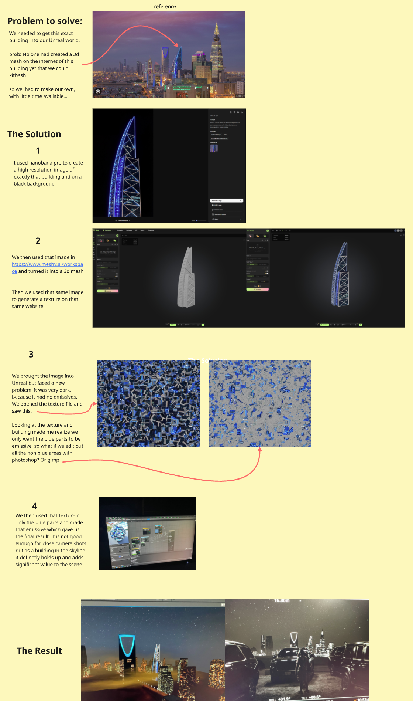

VP × AI — An Informal Overview
AI in
Virtual
Production.
Christopher Jorna
VP Operator · Film Director
two halves: visual AI + code AI
The Map
4 places AI shows up
in a VP pipeline.
Full Gen AI
AI generates the whole shot.
Merged
Real performance + AI background.
Inside the Pipeline
AI assists. Unreal stays the render engine.
After the Pipeline
AI layers realism on top of Unreal output.
+ a fifth one nobody expected → code AI
01 / Full Gen AI
Impressive.
Not authentic.
- Humans feel off
- Performance → plastic
- Eyes don’t land
but…
Great for backdrops.
Great for concept plates.
The VP Gap
What VP gets right.
What it can’t afford.
strengths
- Real talent on set
- Real lighting
- Real performance
limits
- Backgrounds = expensive
- LED volumes = inaccessible
- Greenscreen = compromised lighting
so what if AI fills the gap?
02 / Merged
Best of
both worlds.
performance stays untouched.
AI only handles the world around them.
03 / Inside the Pipeline
Image → 3D asset → Unreal.
Reference photo
a building that doesn’t exist as a 3D mesh.
Nano Banana Pro
clean plate on black bg.
Meshy
image → textured 3D mesh.
Unreal
drop it in, render.

[ drop riyadh-workflow.jpeg into assets/img/ ]
Unreal still the main render engine. AI does the little tricks. → Ashkan goes deep on this next.
04 / After the Pipeline
Let Unreal compose.
Let AI add the real.


Unreal: camera, composition, geometry, timing.
AI: materials, atmosphere, realism.
christopherjorna.github.io/HighVis-R-D/
Part 2 / Code AI
The film world is loud about gen AI.
Quiet about this.
— and this is the half that changed my work the most.
My Workflow Now
I describe what I need.
We build it together.
Custom Fusion scripts — render alphamatte, greymatte, background from white-wall footage automatically.
Ingest automation — footage lands, gets sorted, synced, previewed. Hands off my plate.
Social media pipeline — full video production tool built from nothing over a few weekends.
MARVIN — my own AI chief-of-staff. Runs my calendar, accounting, drafts.
I’m not a software engineer. Doesn’t matter anymore.
Open Source Is Winning
The tools that changed
my work were free.
ComfyUI
node-based AI pipelines — open source
Mick Mahler’s Workflow
white-wall background replacement — shared freely
Corridor Crew / Corridor Key
AI animation that preserves real performance — and they show how
Claude Code
not open source, but democratises the build step
the ecosystem is — for once — on our side.
The Real Benefit
Flow
state.
AI does the plumbing.
I stay in the creative zone.
speed isn’t the point. not getting yanked out of the zone is the point.
Proof / Find My Phone
What a white wall
actually becomes.
before / after — no LED volume, no greenscreen, no 3D software.
[optional — only if time]
Find My Phone
— a clip.
vertical drama — releases end of March.
One Question
What future
do you want
to build?
Christopher Jorna
@cjorna · christopherjorna.com